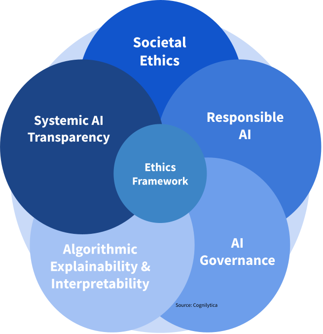
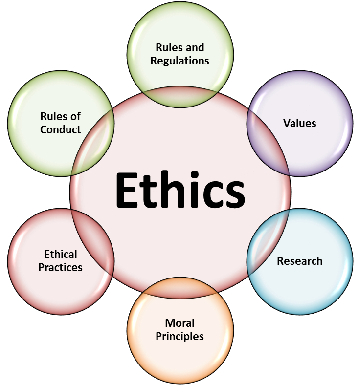
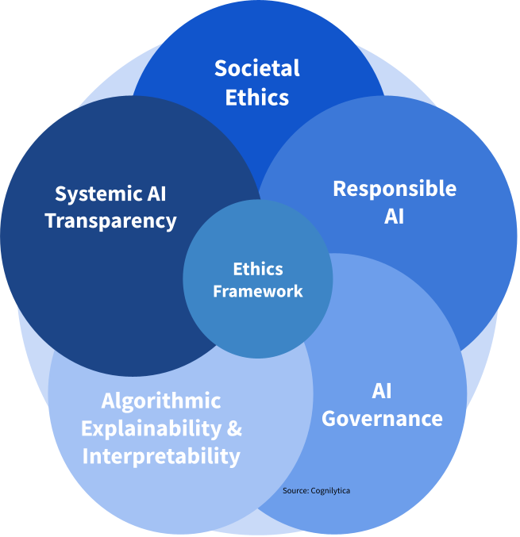
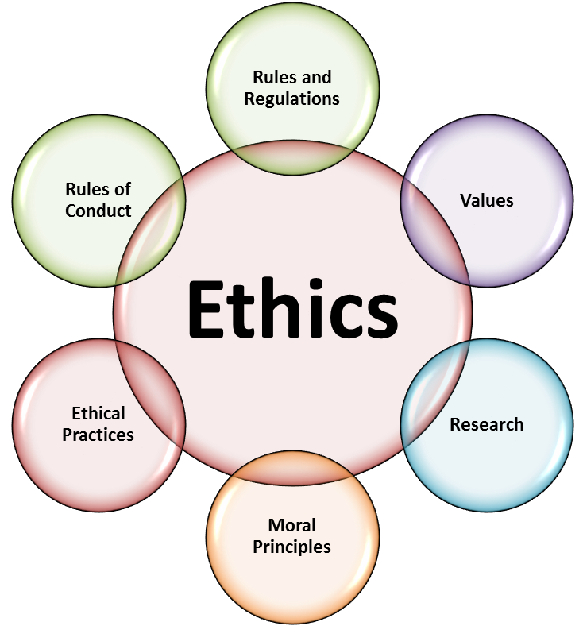

About AI Ethics in Software Development
This page provides background information on the importance and implications of integrating ethical considerations into AI and machine learning applications in software development.
 This page provides background information on the importance and implications of integrating ethical considerations into AI and machine learning applications in software development.
 